NDK Vícedílná monografie
Vícedílná monografie by se dala ve zkratce definovat tím, že musí obsahovat dvě úrovně popisu: titul vícedílné monografie a více jednotlivých svazků (dílů).
Aby bylo možné titul zpracovat jako vícedílnou monografii podle
standardů NDK, musí katalogizační záznam obsahovat přesně definovanou
kombinaci hodnot v polích MARC21.
Pouhá přítomnost číslování v poli 245
nestačí - rozhodující jsou hodnoty v poli LDR: LDR/07 = "m" (označuje
monografii), LDR/19 = "a" (označuje vícedílný dokument).
Vytvoření digitálního dokumentu (objektu)
V systému ProArc je tedy potřeba nejprve založit titulový objekt vícedílné monografie (hlavní úroveň), pod něj přidat jednotlivé svazky jako podřízené objekty (dílčí úrovně). Tyto úrovně odpovídají logickému členění publikace a musí být zohledněny při importu, popisu i následném exportu.
V navigační liště úložiště klikněte na možnost Nový objekt. Otevře se dialogové okno určené pro zakládání všech typů dokumentů (modelů).
Z roletky modelů vyberte typ objektu model NDK Vícedílná monografie - ten představuje titulovou úroveň celé monografie. Tato úroveň bude nadřazená jednotlivým svazkům (dílům), které přidáte následně.
Tip
Doporučujeme využít funkci pro načtení metadat z katalogu - tím se předejde ručnímu vyplňování a zajistí se správné naplnění povinných polí podle standardů NDK.
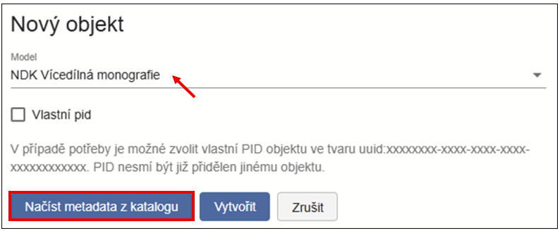
Nejprve zvolte katalog a kritérium vyhledávání (např. signatura, ISBN, číslo ČNB apod.). Zadejte hledaný výraz a potvrďte kliknutím na tlačítko Vyhledat.
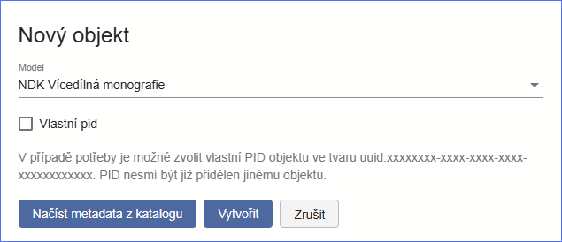
Zobrazí se katalogový záznam ve formátu MARC21. Pokud odpovídá vašemu hledanému dokumentu, klikněte na Vytvořit.
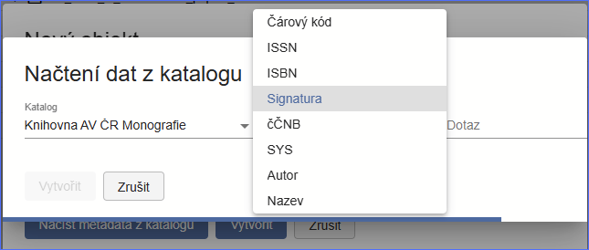
Před samotným založením objektu je možné metadata upravit v náhledu formuláře.
Zvolte jednu z možností:
-
Vytvořit a přejít do objektu - objekt se uloží a rovnou otevře v editačním režimu,
-
Vytvořit - objekt se uloží do úložiště, do editace se dostanete později dvojklikem z hlavní obrazovky.
Systém automaticky kontroluje povinná pole. Pokud některé pole označené jako povinné - M (Mandatory) chybí, objekt se neuloží. Chybějící položky se zvýrazní červeně.
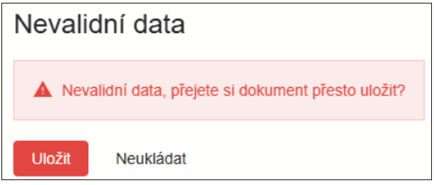
Po úspěšném uložení budete přesměrováni buďto do editačního okna (při volbě Vytvořit a přejít do objektu), nebo do úložiště, odkud můžete objekt upravit dvojklikem (Vytvořit).
Rozvržení editační obrazovky je flexibilní - jednotlivá okna lze
zvětšovat tažením myší.
Uspořádání panelů upravíte pomocí ikony v pravém horním rohu.
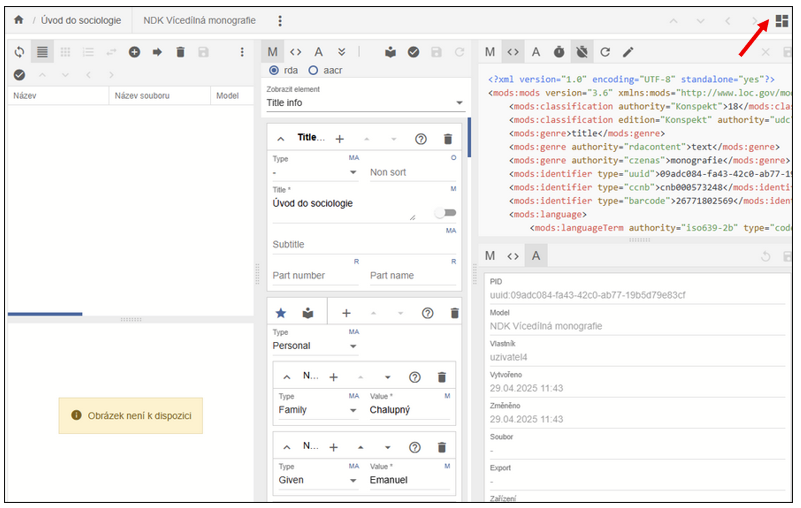
Pro práci s vícedílnou monografií doporučujeme rozložení, ve kterém vpravo vidíte Stromovou strukturu dokumentu (hlavní titul a podřízené části), uprostřed Popisná metadata a vlevo máte zobrazení Tabulky:
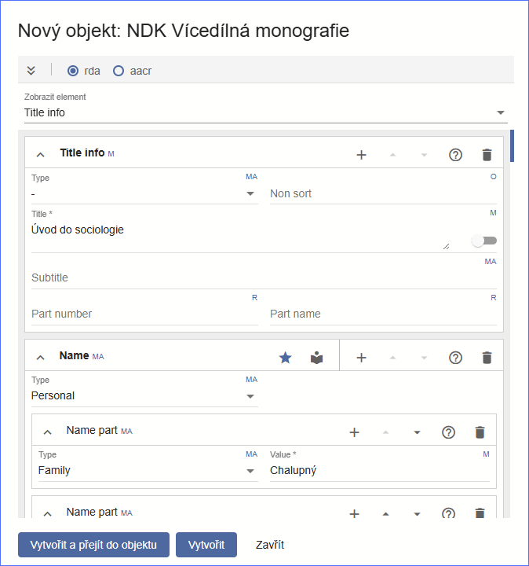
Kliknutím na ikonu plus (+) přidáte nový, podřízený objekt, tedy svazek (díl) monografie.
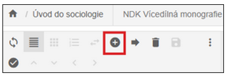
Opět se otevře dialogové okno shodné pro zakládání všech modelů (typů dokumentů). Výběr modelu je přednastaven na ten, u něhož se předpokládá, že sem patří (v případě NDK Vícedílné monografie je to Svazek Vícedílné monografie).
Zvolte pozici, kam se nový objekt ve struktuře vloží: Na konec, nebo Za vybraný (nový svazek se vloží za aktuálně označený).
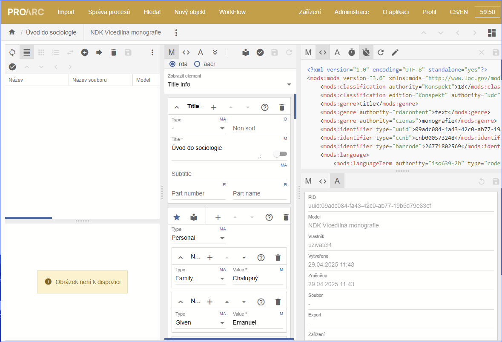
Opět si můžete vybrat mezi:
-
Načtením metadat z katalogu (doporučeno) 💡
-
Ručním vyplněním prázdného formuláře
Po vytvoření záznamu zkontrolujte a případně upravte metadata. Zejména doplňte číslo části (Part number) a název části (Part name) - pokud je známo.
Doporučujeme
Nejprve založit všechny svazky pomocí volby Vytvořit, a teprve poté provádět další editace.
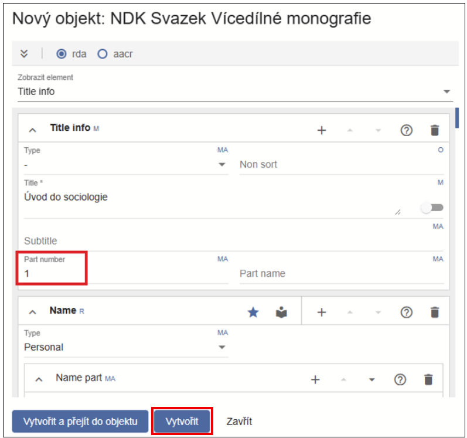
Vpravo vidíte Strom - stromovou strukturu zakládaného objektu, prozatím je vytvořen pouze první svazek vícedílky:

Pokud nový svazek nezakládáte načtením z katalogu, systém automaticky přebere některé údaje z nadřazené úrovně (v souladu se standardem NDK). Povinné údaje, které je potřeba doplnit ručně, jsou označeny červeně v rozbalovacím seznamu elementů, např.:
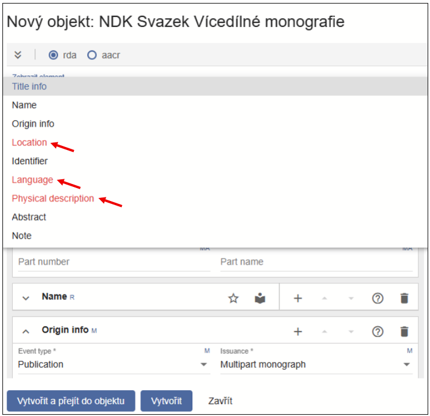
Pořadí svazků lze upravit dvěma způsoby:
-
Přetažením myší - přetáhněte objekt na požadované místo, obrazovka zešedne jako by se lehce zamlží, změnu uložte pomocí ikony diskety.
-
Změna pozice - v nabídce pod ikonou tří teček vyberte Změna pozice, do pole Pozice zadejte cílové pořadí (např. 2), potvrďte kliknutím na Přesunout. Následně změnu uložte.
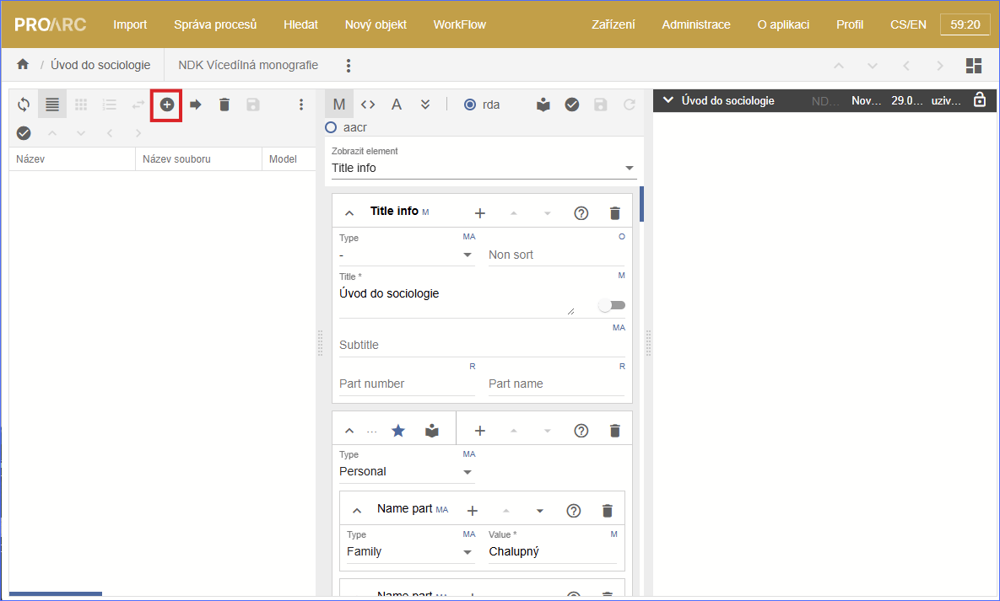
Načtení dat
Každý uživatel má v systému ProArc přiřazen pracovní adresář. O jeho namapování informuje administrátor.
Do importního adresáře je třeba připravit následující soubory: skeny dokumentu ve formátu TIFF, k nim příslušné OCR soubory ve formátu TXT a a ALTO soubory ve formátu XML.
Upozornění
Pro modely NDK není možné importovat TIFF soubory bez odpovídajících OCR a ALTO dat.
Postup načtení dat je následovný: V levé části horní navigační lišty klikněte na tlačítko Import, tím otevřete importní obrazovku.
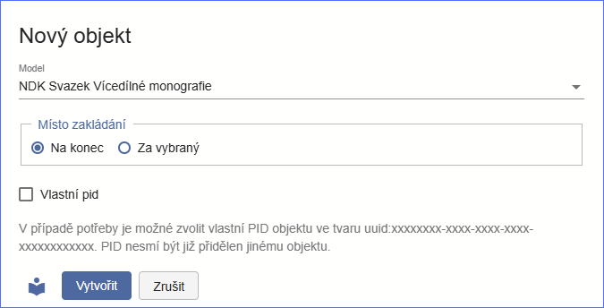
Vyberte adresář obsahující data dokumentu určeného k načtení. Zvolte Profil načítání podle typu modelu. Pro textové dokumenty dle modelu NDK použijte profil Default.
Nastavte další volby importu:
-
Priorita: Výchozí hodnota je Střední. Vyšší priorita způsobí, že se dávka zpracuje přednostně.
-
Zařízení: Označuje zařízení, na kterém byla data připravena (např. skener). Po jeho výběru se aktivuje tlačítko Načíst.
-
Generovat index stránek: Funkce je ve výchozím stavu aktivní. Stránky budou při importu automaticky očíslovány.
-
Ikona obnova načítání (šipka) slouží k opětovnému načtení již zpracované dávky. Před opětovným načtením je nutné odstranit pomocné soubory vytvořené v importním adresáři - tato funkce je automaticky odstraní.
Průběh načítání jedné dávky: Po spuštění se zobrazí dialogové okno s průběhem importu. Okno je možné zavřít, proces bude pokračovat na pozadí. Stav lze průběžně sledovat v sekci Správa procesů.
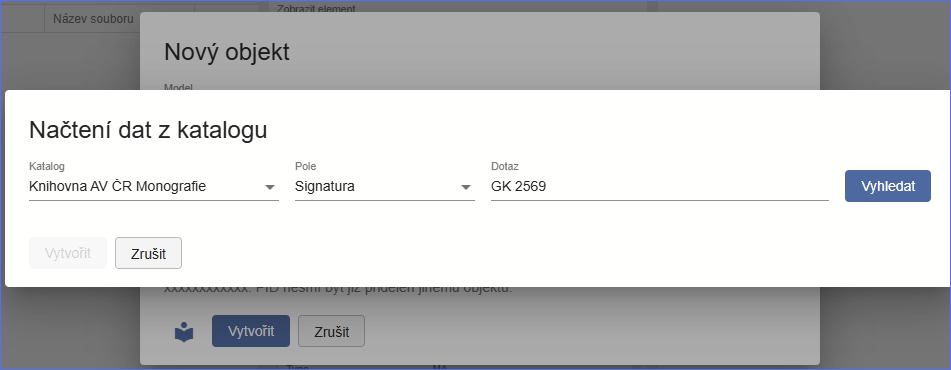
Průběh načítání více dávek: K importu lze označit a načíst více dávek najednou - dávky se následně řadí do fronty a zpracovávají se postupně. Pro sledování stavu přejděte rovnou do Správy importních procesů a klikněte na Zobrazit frontu načítání.
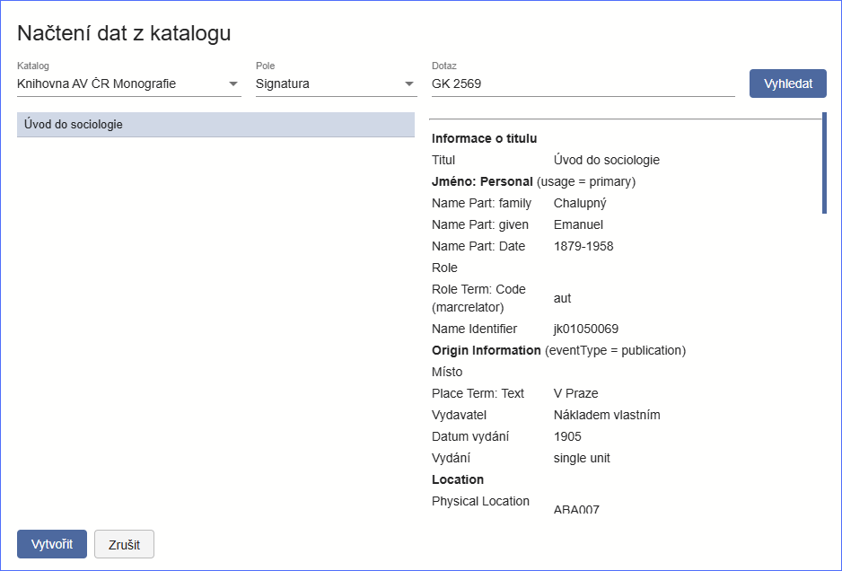
Zobrazí se tabulka s průběhem importu, kterou je možné aktualizovat tlačítkem Obnovit.
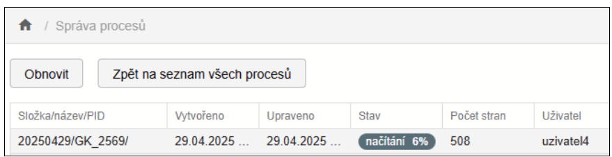
Po dokončení načítání daný proces zmizí z aktuálního zobrazení.
Pro další zpracování přejděte na Seznam všech procesů, kde je
potřeba dávku označit. Poté se v liště zaktivní tlačítka Načíst
znovu (pro opětovné načtení dávky), a Pokračovat (pro pokračování
ve zpracování dat).
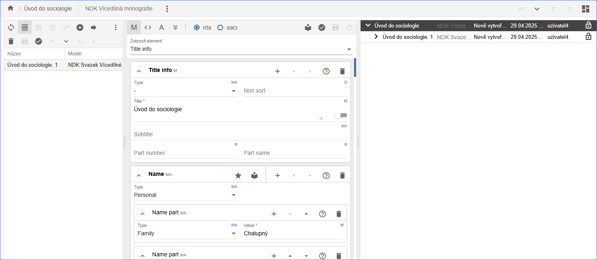
Popis obrazových dat (paginace)
Po načtení dávky klikněte na tlačítko Pokračovat. Dávka se otevře v okně Správa dávek - editace. Každé podokno obsahuje vlastní nástrojovou lištu s funkcemi. Popis funkce se zobrazí po najetí myší na příslušnou ikonu.
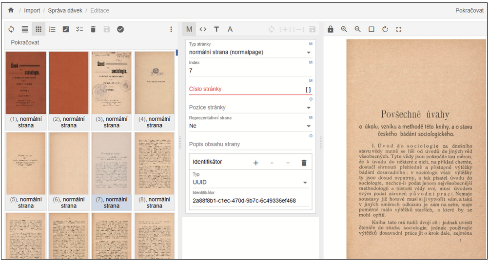
Pracovat lze se zobrazením náhledů skenů:
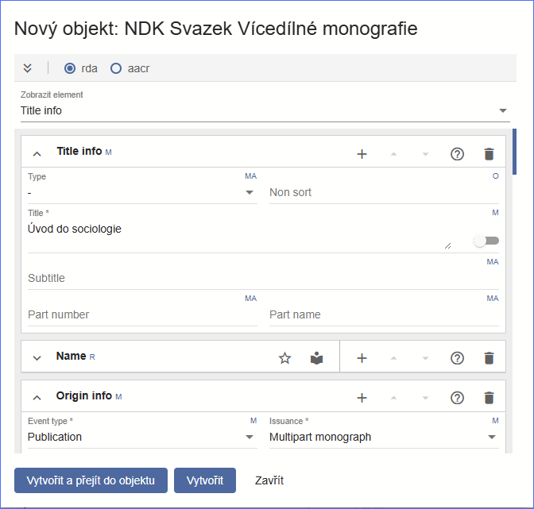
nebo s řádkovým zobrazením:
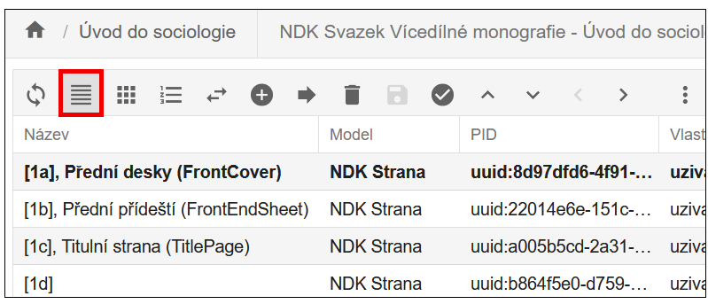
Oboje možnosti zobrazení lze podle potřeby přepínat na liště.
Po úpravě popisu konkrétní strany potvrďte změnu klávesou ENTER - automaticky se přesunete na následující stranu.
Pro rychlejší práci lze provést hromadné paginování:
-
Označte blok stran pomocí myši nebo kombinace kláves SHIFT / CTRL (vybrané strany budou podbarvené).
-
V pravé části formuláře nastavte potřebné parametry popisu (např. čísla stran).
-
Pro uložení změn použijte klávesu ENTER nebo ikonu diskety.
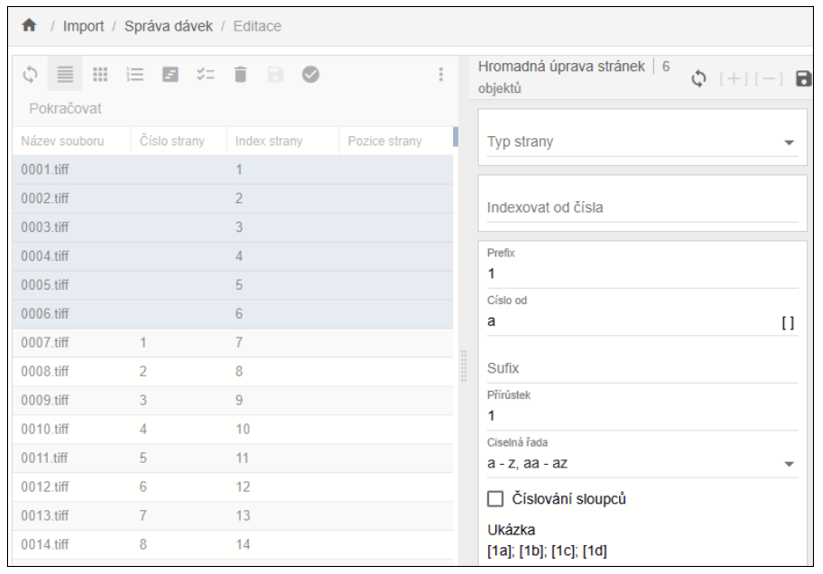
Jakmile jsou všechny objekty popsány povinnými elementy (např. číslem strany), klikněte na Pokračovat. Systém provede validaci dat.
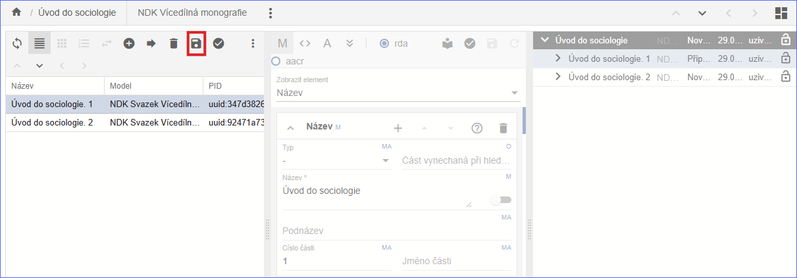
Pokud některé strany nejsou správně očíslovány, zobrazí se chybové hlášení. Chybné záznamy budou červeně zvýrazněny pro snadnější identifikaci.
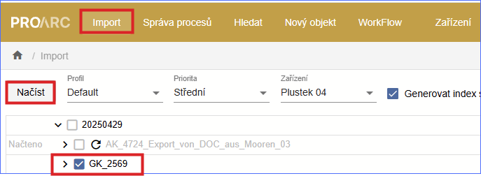
Po opravě chyb a úspěšné validaci pokračujte opět tlačítkem Pokračovat, čímž otevřete obrazovku pro výběr nadřazeného objektu (titulu), ke kterému patří importované a popsané strany.
Při výběru nadřazeného objektu (titulu) je dobé zúžit výběr zadáním modelu a třeba části názvu titulu. V horní části okna se zobrazí seznam odpovídajících titulů, ze kterého vyberte cílový objekt a potvrďte volbu Uložit.
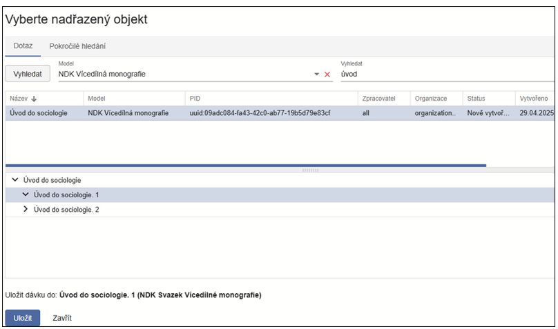
Poté je třeba je ještě kliknout na Ano odsouhlasit potvrzující dialog:
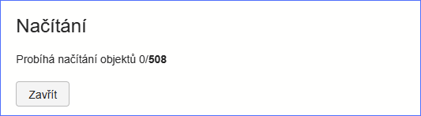
Následně se skeny začnou ukládat:
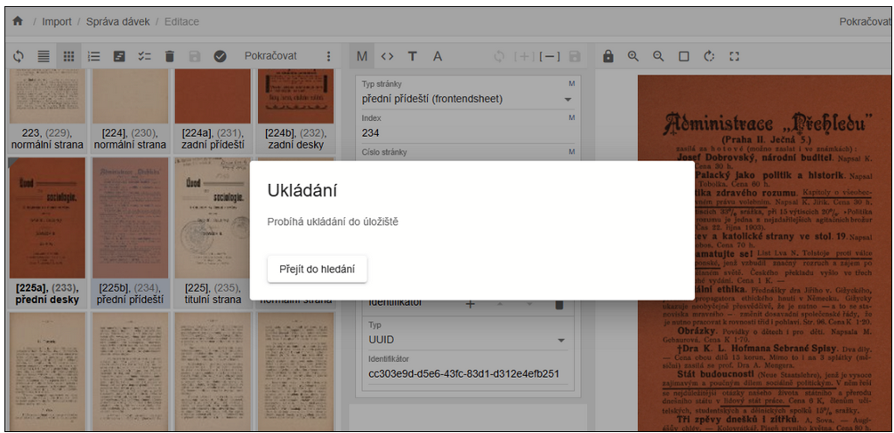
Po uložení se zobrazí tato hláška. Zde klikněte na Otevřít v editoru.
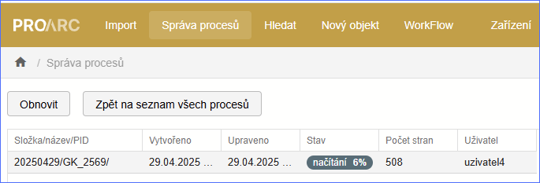
Úprava (editace) dokumentu
Zobrazení objektu v editoru je totožné jako v případě nově založeného objektu. Rozdíl spočívá v tom, že nyní vidíte i seznam přiřazených stran a jejich náhledy.
Metadata lze upravovat jak na úrovni stran, tak na úrovni titulu,
a to buď ve formulářovém režimu, nebo přímo v XML. Jakákoli změna
aktivuje (jinak zašedlou) ikonu diskety, kterou je třeba stisknout
pro uložení změn.
I v tomto případě platí, že každé podokno má vlastní nástrojovou lištu. Popis jednotlivých funkcí se zobrazí při najetí myší na příslušnou ikonu. Méně často používané funkce jsou skryté pod ikonou tří teček.

Podokno se zobrazením stran umožňuje přepnutí mezi tabulkovým zobrazením a dlaždicemi (náhledy), přesunovat jednotlivé strany nebo celé skupiny na jiné pozice v rámci dokumentu, a to tažením myší, nebo pomocí funkce Změnit pozici.
Pokud se nacházíte na úrovni podřízených objektů (např. stran), lze se snadno vrátit zpět na nadřazený objekt kliknutím na název titulu v horní liště editoru, případně využít „šipky" Přejít na nadřazený objekt.

Přesunutí skenů do jiného objektu
Pokud byly všechny díly vícedílné monografie (např. 2 svazky) naskenovány do jednoho souboru, např. kvůli společnému svázání, je nutné přesunout skeny do odpovídajících svazků.
Přesun mezi svazky je možný takto: V hlavním okně úložiště vyhledejte titul, ke kterému byly skeny přiřazeny.
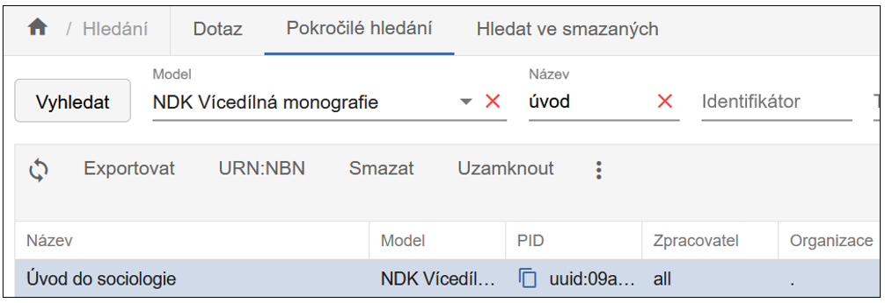
Dvojklikem na název titulu otevřete editační okno objektu. Ve struktuře objektu klikněte na konkrétní svazek, do kterého byly skeny původně uloženy (nejčastěji první díl).
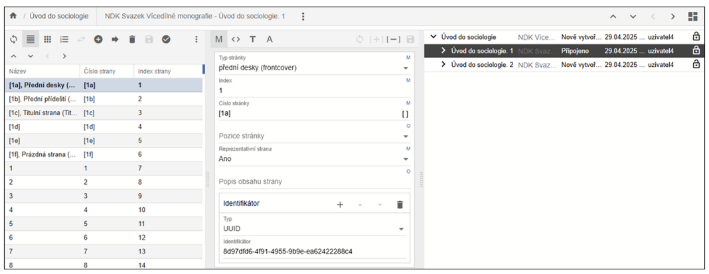
V levém panelu označte skeny, které chcete přesunout a klikněte na ikonu Přesunout (šipka):
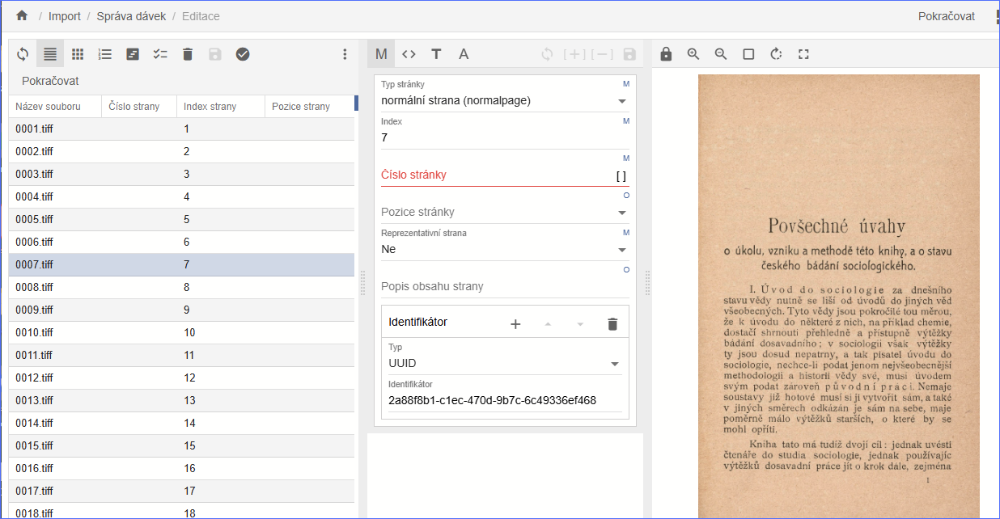
Otevře se okno pro výběr cíle přesunu. Vyhledejte a označte cílový svazek, do kterého mají být vybrané skeny přesunuty. Skeny připravené k přesunu budou podbarvené pro snadnější kontrolu.
V zobrazeném dialogovém okně zkontrolujte zvolený cíl. Pro kontrolu je nad tlačítky Zrušit vazbu a Přesunout i slovně název svazku, do něhož se budou skeny přesunovat. Klikněte na tlačítko Přesunout, tím dojde k přesunu vybraných skenů do cílového svazku vícedílné monografie.
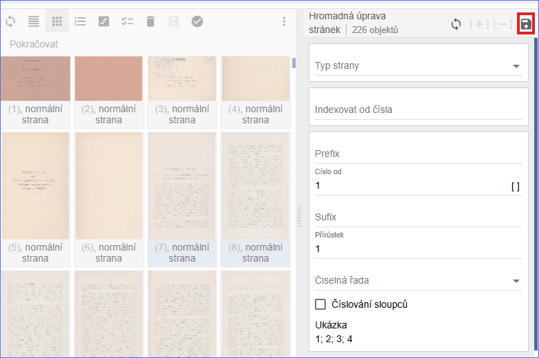
Po kliknutí na Přesunout se zobrazí potvrzovací dialog „Přesun objektů - Opravdu chcete přesunout vybrané objekty do nově zvoleného objektu?" Potvrďte kliknutím na Ano.

Přidělení URN:NBN
Abychom mohli zpracovaný dokument exportovat pro zveřejnění v Digitální knihovně (DK) nebo pro archivaci, je nutné mu přidělit URN:NBN.
URN:NBN můžete přidělit dvěma způsoby:
- 1) V editačním režimu objektu - funkci najdete v pravém horním rohu pod ikonou tří teček. Po kliknutí se zobrazí nabídka, kde zvolíte přidělit URN:NBN.
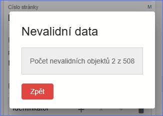
- 2) V základním okně úložiště - funkce je dostupná na horní liště obou horizontálních podoken.
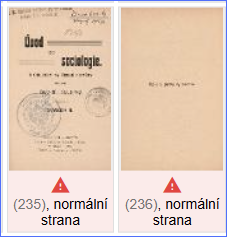
Po stisknutí tlačítka se zobrazí dialogové okno. V rozbalovacím seznamu zvolte registrátora. Většinou bude dostupný pouze jeden. Po potvrzení požadavku proběhne komunikace se službou Resolveru.
Přidělené URN:NBN se automaticky zapíše do metadat mezi platné identifikátory dokumentu.
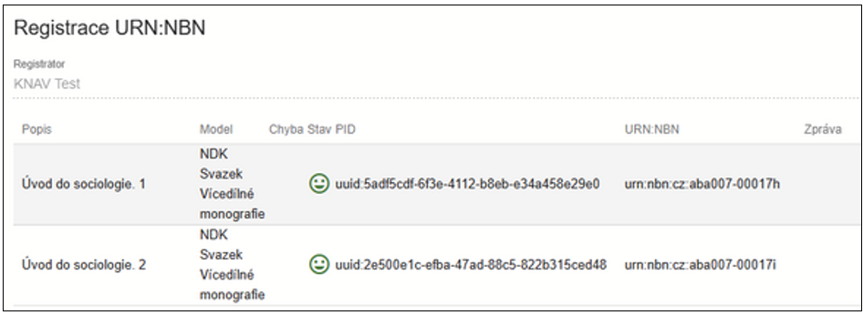
ProArc podporuje i zpětnou vazbu: Pokud omylem registrujete dokument znovu, nebo dojde k chybě při registraci, zobrazí se odpovídající hlášení.
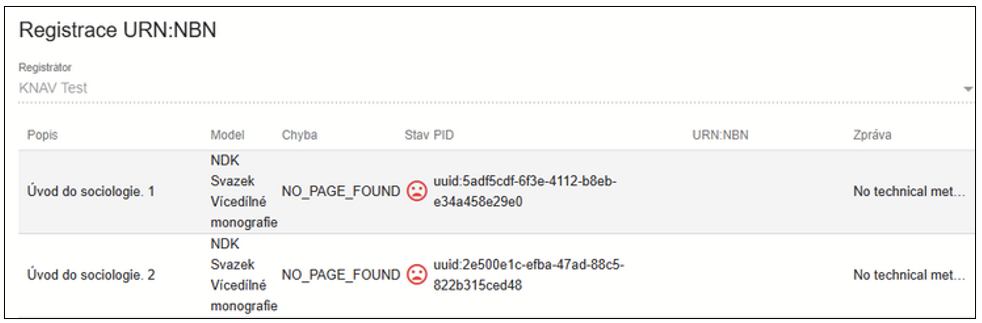
Důležité
URN:NBN nelze přidělit objektu, který nemá přiřazené skeny.
Export dokumentu
Funkce Export je dostupná (obdobně jako export URN:NBN) přímo v editačním režimu objektu - pod ikonou tří teček, nebo v základním okně úložiště.
Export se spouští jako proces na pozadí. Exporty jsou řazeny do fronty, kterou lze sledovat ve Správě procesů.
K importům do digitální knihovny, k replikaci dat a k předávání dat do Národní digitální knihovny (např. VISK) slouží primárně NDK PSP balíček.
Export NDK PSP balíčku lze provést do lokálního exportního adresáře, nebo přímo do napojené instance Krameria, pokud je tato možnost nakonfigurována.
Cílové umístění exportu zvolte v dialogovém okně pomocí roletky.